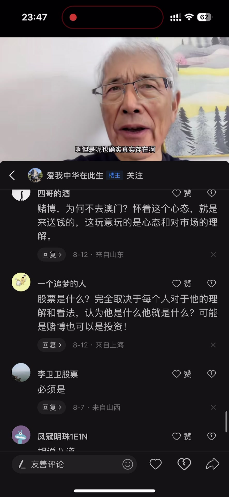

内容要点
一段近 4 分钟的寓言式科普：有人问炒股游戏到底是谁在赚钱、为什么自己总赚不到钱。讲者用「养马村」的故事作答——村长收税、商人高价收马再抬价，村民追涨杀跌、甚至借钱买马，最后商人带着马消失。赚钱的是村长、眼尖没上当的少数人、商人；而追高接盘、借钱买马的村民，是最惨的输家。敏感的话不便直说，故事本身就是答案。
知识结构
养马村的村民都喜欢养马。村长宣布卖马要交千分之一、买卖双方再交万分之几的费用；一个知名商人进村收马，开口十万一匹，村民卖掉大部分。
商人把价格抬到三十万、六十万，村民后悔卖早了。夜里商人助理把马拉回村里三十万一匹卖，村民想着三十万买第二天六十万卖、一天翻倍，纷纷拿出积蓄甚至借钱买马。
只有一小部分理智的人没上当。第二天商人不见了，大家才知道上当了，闹到村长那里。赚钱的是村长、眼尖的少数、商人；谁最惨？显然是高位接盘、借钱买马的村民——故事说完了，答案其实都在里面。
股市里赚走真金白银的是收税方、信息最灵的人和对局的组织者；追涨杀跌、借钱上杠杆的普通人是最后的接盘者——寓言把「谁在赚钱」说透了。
00:00-01:10养马村：村长收税，商人收马
开场：讲者说几十年经验和阅历都相当丰富，有人问他炒股游戏到底是谁在赚钱、为什么我总赚不到钱；有些话比较敏感不好直接讲，于是举一个例子。
我们村是一个远近闻名的养马村，大家都喜欢养马，而且养得特别多。这个时候村长开口说：以后每人卖马的时候要给村里交个千分之一的费用，同时买的人和卖的人还要另外再交个万分之几的费用。村民敢怒不敢言，心想有赚的也行，这费用一点点无所谓。
这个时候我们村来了一个非常有名的商人，来到我们村就收马，开口价就是十万块钱一匹。村民前仆后继地把马都卖了，加起来估计卖了有八成。
01:11-02:30涨价、翻倍与追高
商人看大家都收得差不多了，于是又涨了个价，三十万块钱一匹，大家于是就把手里的全部卖掉了。商人看大家都没有马了，这个时候就提升到六十万块钱一匹。
村民很后悔：早知道我应该再坚持一下的，就可以卖到六十万。没办法，巧妇难为无米之炊。
一天夜里，商人的助理就把马全部拉回村里，开口价三十万块钱一匹。村民不得了：三十万买，第二天就可以卖六十万，一天就翻倍，赶紧买！于是很多村民都把自己的积蓄、还有多年的储蓄都拿出来买马，甚至还有人找村长借钱、找其他人借钱来买马。这个有点夸张，但也确实真实存在。
02:31-03:50谁赚了钱，谁最惨
但是也有一小部分人比较理智，他心想这可能有点坑，就没买，观望了一下。等到第二天再去卖马的时候，发现商人不在了。
大家瞬间都懵了，才知道上当了，都闹到村长那里去，村长说要严厉打击这些人。
所以这个故事讲了有哪些人赚了？第一个是村长；第二个是眼尖的那一小批人、最后没上当的那批人；第三个人就是商人。那你知道这里面谁最惨吗？——答案是显然的：追高买马、甚至借钱买马的村民，他们是这个故事里最后的输家。

完整转录（141段）
以下文本由 Whisper medium 模型自动转录，可能存在少量识别误差，已尽可能修正。
几十年经验和阅点都是相当丰富
前两天有个小伙子问我
他说这个炒股游戏到底是谁在赚钱
为什么我总赚不到钱
有些话听了比较敏感
我也不好直接跟你讲
我给大家举个例子
我们村是一个远近文明的养马村
大家都喜欢养马而且养的多得不得了
这个时候村长就开口说
以后每人卖马的时候
要给村里交个千分之一的费用
同时买的人和卖的人
还要另外再交个万分之几的费用
虽然村民感动不敢言
但是听一下有赚的也行
这费用一点点无所谓
这个时候我们村就来了一个
非常有名的商人
来到我们村就收马
开口价就是十万块钱一匹
村民前服后用把马都给卖了
加起来估计卖了有80%
然后大家看都收得差不多了
于是又给涨了个价
三十万块钱一匹
于是大家就把手里的全部给卖掉了
商人看大家都没有马了
这个时候就提升到六十万块钱一匹
但是村民很后悔
早知道我应该再坚持一下的
就可以卖到六十万
没办法
巧妇难为无米之锤
一天夜里商人的助理
就把马全部拿到村里
开口价三十万块钱一匹
村民不得了
三十万第二天就可以卖六十万
一天就翻倍
不得了
赶紧卖
所以很多村民都把自己的释放钱
还有很多年的储蓄
都拿起来买马
甚至还有人找村长借钱
或者找其他人借钱
来借钱买马
这个就有点夸张了是吧
但是也确实真实存在
但是也有一小部分人比较理智
他心想这可能有点坑
他就没观望了一下
等到第二天的时候
再去卖马的时候发现
商人不在了
大家瞬间都懵了
才知道我上当了
都闹到村长那里去了
村长说要严厉打击这些人
所以说这个故事讲了
有哪些人赚了
第一个就是村长
第二个就是眼尖的那一小批人
最后没上当的那批人
第三个人
那就是商人
那你知道这里面谁最惨吗
我操骨槽了几十年
经验和阅点都是相当丰富
前两天有个小伙子问我
他说这个操骨游戏
到底是谁在赚钱
为什么我总赚不到钱
有些话题比较敏感
我也不好直接跟你讲
我给大家举个例子
我们村是一个远近文明的养马村
大家都喜欢养马
而且养得多得不得了
这个时候村长就开口说
以后每人卖马的时候
要给村里交个千分之一的费用
同时买的人和卖的人
还要另外交个万分之几的费用
虽然村民感动不敢言
但是心想有赚的也行
这费用一点点无所谓
这个时候
我们村就来了一个非常有名的商人
来到我们村就收马
开口价就是十万块钱一匹
村民前福后勇把马都给卖了
加起来估计卖了有80%
然后大家看都收得差不多了
于是又给涨了个价
三十万块钱一匹
于是大家就把手里的全部给卖掉了
商人看大家都没有马了
这个时候就提下到六十万块钱一匹
但是村民很后悔
早知道我应该再坚持一下的
就可以卖到六十万
也没办法
巧妇难为无米之垂
一天夜里
商人的助理就把马全部拉到村里边
开口价三十万块钱一匹
村民不得了
三十万今天就可以卖六十万
一天就翻倍
不得了
赶紧卖
所以很多村民都把自己的释放钱
还有很多年的储蓄
都拿起来买马
甚至还有人找村长借钱
或者找其他人借钱来借钱买马
这个就有点夸张了
但是也确实真实存在
但是也有一小部分人比较理智
他心想这可能有点坑
他就没观望了一下
等到第二天的时候
再去卖马的时候发现
商人不在了
大家瞬间都懵了
才知道上当了
都闹到村长那里去了
村长说要压力打击这些人
所以说这个故事讲了
有哪些人赚了
第一个那个村长
第二个就是眼尖的那一小批人
最后没上当的那批人
第三个人那就是商人
那你知道这里边谁最惨吗
我操旧超过几十年
经验和阅点都是相当丰富
前两年有个小伙子问我
他说